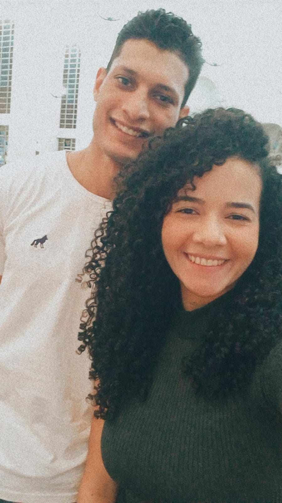
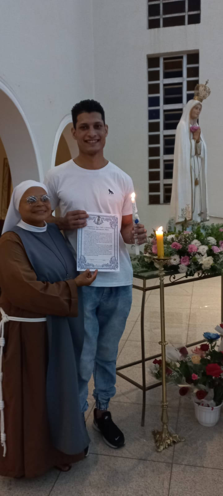
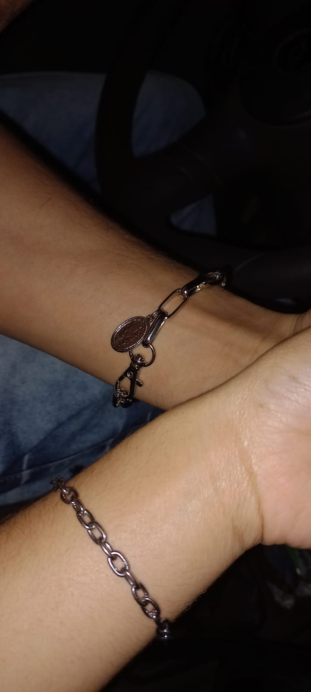
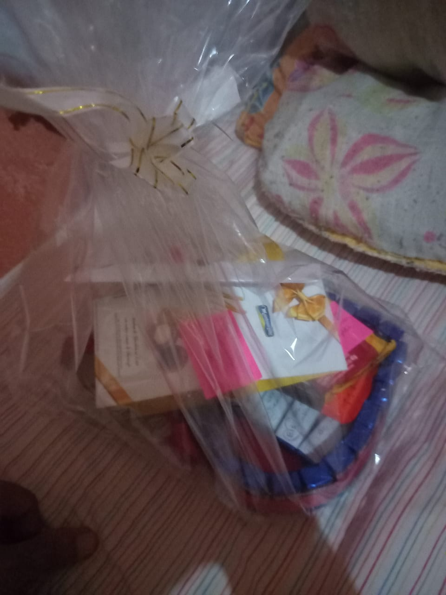
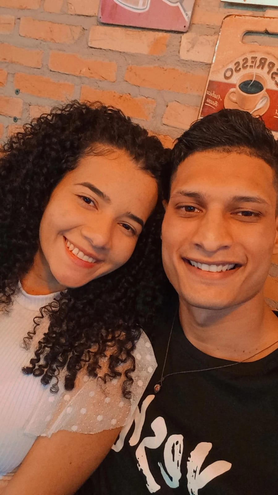
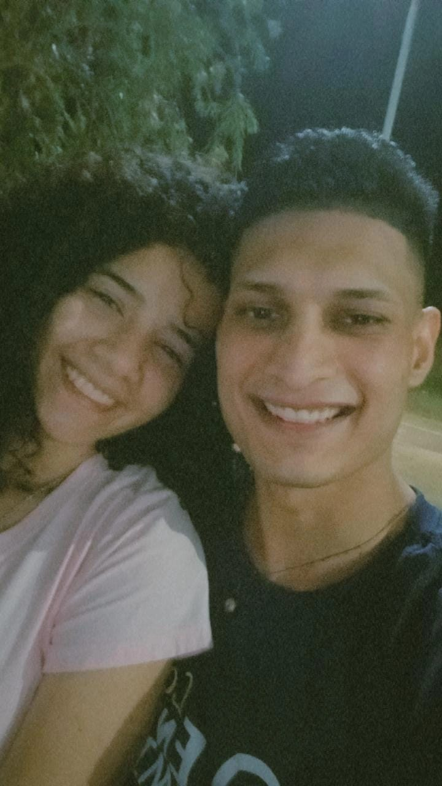

Pois é tudo começou la na caoa pra mim quando tevi, ate pensei em fala com vc quando tivi pela primeira vez, pq vi que voce era consagrada kkk, so que achei melhor não, vc acharia estranho pensei.
Mais ai tudo mudou quando tivi na quele retiro, retiro jose-fino, no dia 29/08/2021. achei uma bela oportunidade pra fala com vc, na minha cabeça vc seria uma otima amiga, e talvez ate namorada kkk.
Aquela menina que encantava com o olhar, sorriso, simplicidade e com o modo de se vestir, vc ja me impreciono muito naquele encontro kkk.
Quando tivi la realmente não vou menti, ja pensei nossa que linda, o papai se for ela so agradeço kkkk.
Ate que criei coragem e fui fala com vc, e acabou que nos viramos amigos, mais por pouco tempo logo vc saiu da caoa e não teve como aceita meus convites pra sai, então acabei desistindo, e pensei pelomenos viramos amigos, distates mais amigos.
Então vc me chamou para aquele retiro, reconectar. E la vi outra oportunidade de Deus, ai ficamos mais proximos, mais amigos.
E começamos a conversa mais no whats, e foi ai que saimos pela primeira vez.
E depois de algumas vezes falei que estava querendo namora vc, meio engraçado como falei e sua reação kkkkkk, mais vc com muita sabedoria me chamou pra reza, na hora pensei é ela kkkkk.
E o seu primeiro abraço nunca vou esquece, foi o melhor abraço que ja recebi, meu coração ate disparou kkkk.
Então vc fez parte de um momento importante da minha vida minha consagração, não sabia como me consagra mas vc me ajudou, e hj sou consagrado por causa da sua ajuda, vc ja chegou na minha vida me ajudando a ser santo.



Então foi ai que depois de um mes que nos estavamos rezando eu acho, te pedi em namoro, atravez de uma carta pq não sou muito bom com palavras, mesmo sabendo que vc iria aceita estava nervoso kkkk. E no dia 29/05/2022, nos começamos a namora, estava muito feliz e estou kkkk.
Foi ai que vc me deu o primeiro presente que ganhei de dias dos namorados, depois de duas semanas de namoro.

E com cada frase linda e de forma tão especial, me senti tão amado. É incrivel que com sua simplicidade fez algo tão grande e criativo kkk.
Nossos momentos juntos tão especial que vc começou a se torna o primeiro pensamento do meu dia, a cada dia estava com saudades.
E eu posso esta fazendo qualquer coisa se for do seu lado esta otimo.

Andando na praça.

Ou lanchando.
Algo simples se torna algo incrivel do seu lado, sua compania faz tudo mais bonito.
Achei que Deus não ia me agradar tanto atendendo minhas orações, ele me confiou um grande tesouro, que é você, ate nossos gostos são os mesmo kkkk algo incrivel se não é vc que vai ser a minha esposa, ai tenho certeza que minha vocação não é casa, ai vou para o seminario e viro um padre kkkk.
Sei que passou por momentos dificeis e so Deus pra te da força, e como ele tem dado, mesmo passando por dificuldades, continua essa menina cheia de luz, que ilumina as pessoas ao redo, como nosso senhor jesus diz: Seja luz do mundo. E vc esta sendo essa luz, cheia do espirito santo, que prega com a vida, que é o mais importante, um exemplo para mim.
So queria te agradecer mesmo sabe, por fazer parte da minha vida, por ser parte da minha historia, e agradeço muito a Deus porque me atendeu ate nos detalhes.
Feliz um mes de namoro para nos, um mes que passou rapido, porem parece que ja te conheço a tanto tempo kkkk.